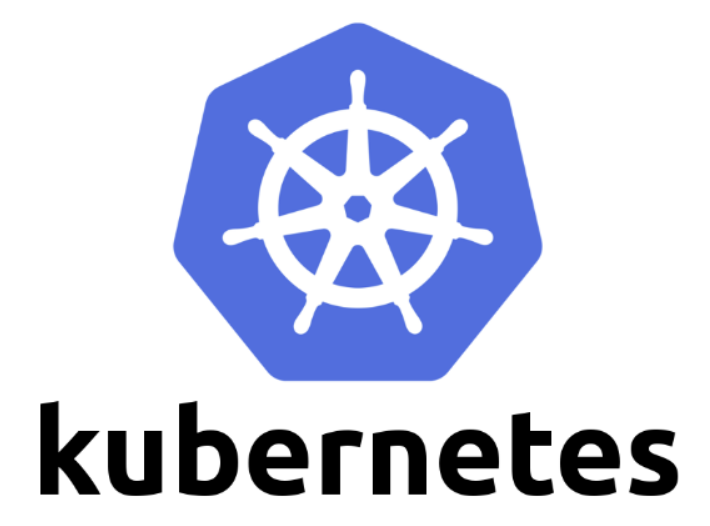

쿠버네티스의 등장배경
도커의 등장으로 컨테이너 기반 배포 방식이 보편화되고, 많은 서비스들이 도커라이징 되어 이미지로 관리되기 시작했습니다.
점점 이미지가 많아지면서, 관리해야할 컨테이너와 서버들 또한 많아지게 되었죠.
이 말은 즉슨, 엔지니어가 할일이 많아졌다는 말입니다.
💡 "컨테이너 어느 서버에 배포하지? 리소스 남는 서버 있나? 확인 확인🤦♀️"
"엇! 이 컨테이너 죽었네ㅜㅜ 다시 살려줘.."
할일이 많아지면 이런 잡스러운 일들을 자동화 시켜야겠죠?
컨테이너들의 관리를 자동화할 도구(컨테이너 오케스트레이션 툴)의 필요성이 대두되고, 비로소 컨테이너 오케스트레이션의 춘추전국시대가 열리게 됩니다.
많은 컨테이너 오케스트레이션 도구가 있음에도 불구하고, 현재는 쿠버네티스가 컨테이너 오케스트레이션 툴의 사실상 표준(De facto) 로 자리매김하게 되었습니다.
이렇게 될 수 있었던 몇가지 이유는 다음과 같습니다.
- 대규모 컨테이너를 관리했던 구글의 노하우와 강력한 확장성
- 마이크로소프트, RedHat, IBM 등 수많은 기업의 참여
- AWS, GCP, Zure, Digital Ocean, IBM Cloud, Oracle Cloud 등에서 관리형 서비스를 내놓음으로써 클라우드 컨테이너 시장을 평정
쿠버네티스란?

- 컨테이너를 쉽고 빠르게 배포 및 확장하고, 관리를 자동화해주는 오픈소스 플랫폼
- 명칭은 조타수(helmsman)나 조종사(pilot)를 뜻하는 그리스어에서 유래
- k8s라는 약자로 불리는데, 이는 k,s 사이의 8글자를 나타내는 약식 표기
- 단순한 컨테이너 플랫폼이 아닌 마이크로서비스, 클라우드 네이티브 플랫폼(CNCF) 을 지향하고 컨테이너로 이루어진 것들을 손쉽게 담고 관리할 수 있는 그릇 역할